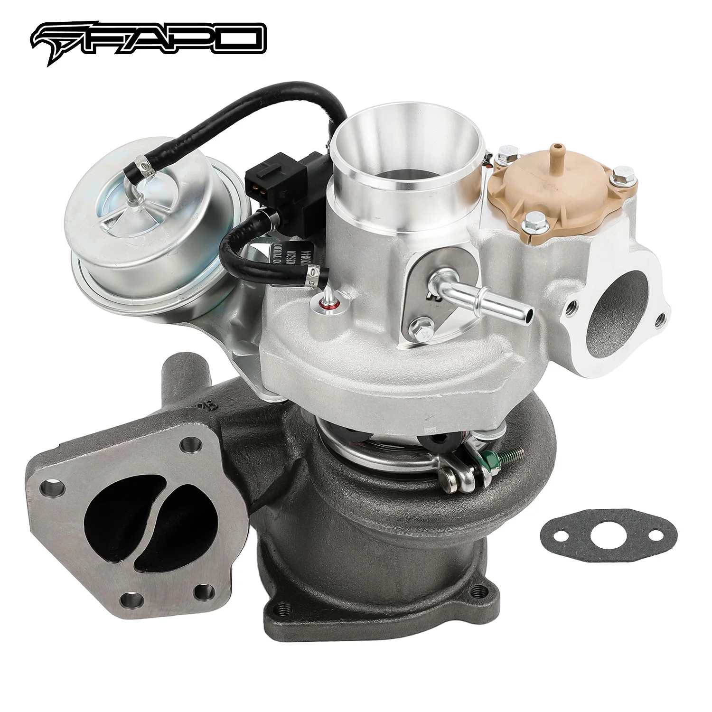

1 / 9FAPO turbosprężarka Do Chevy Cobalt HHR Pontiac Solstice Buick Regal Verano sky 2.0 L850
Zastosowanie: 2008-2010 Chevrolet Cobalt z turbodoładowanym silnikiem 2,0 l L850 Ecotec A20NHT 2008-2010 Chevrolet HHR z turbodoładowanym silnikiem 2,0 l L850 Ecotec A20NHT 2007-2009 Pontiac Solstice GXP z turbodoładowanym silnikiem 2,0 l L850 Ecotec A20NHT Buick Regal 2011-2017 z turbodoładowanym silnikiem 2,0 l L850 Ecotec A20NHT 2013-2016 Buick Verano z turbodoładowanym silnikiem 2,0 l L850 Ecotec A20NHT 2007-201…
Application: 2008-2010 Chevrolet Cobalt with 2.0L L850 Ecotec A20NHT Turbocharged Engine 2008-2010 Chevrolet HHR with 2.0L L850 Ecotec A20NHT Turbocharged Engine 2007-2009 Pontiac Solstice GXP with 2.0L L850 Ecotec A20NHT Turbocharged Engine 2011-2017 Buick Regal with 2.0L L850 Ecotec A20NHT Turbocharged Engine 2013-2016 Buick Verano with 2.0L L850 Ecotec A20NHT Turbocharged Engine 2007-2010 Saturn Sky with 2.0L L850 Ecotec A20NHT Turbocharged Engine 2011 Saab 9-5 Turbo4 with 2.0L L850 Ecotec A20NHT Turbocharged Engine 2005- Opel GT with 2.0L L850 Ecotec A20NHT Turbocharged Engine 2008- Opel Insignia with 2.0L L850 Ecotec A20NHT Turbocharged Engine Features: High quality replacements for factory parts; excellent durability, optimizing vehicle performance OE design; simple replacement for factory part Center rotating bearing housing designed to work with factory oil and coolant lines; turbo boost control solenoid valve included Component dynamically balanced using state-of-the-art balancing machine (avg 0.5 mg or less) Turbine housing made from ductile iron QT450-10, withstand temperatures up to 700¡ãC Steel turbine wheel made from K418 alloy for high oxidation resistance and stability up to 900¡ãC Cast aluminium blades with good air tightness and corrosion resistance Accessories included 1 year warranty for manufacturing defects Professional installation is highly recommended Before installing the turbocharger, analyze and eliminate the cause of the previous failure (e.g., insufficient oil supply, foreign bodies in intake, crankcase ventilation issues, etc.) Technical Specifications: Durable Compressor Wheel: 12(6+6) blades, Size: 43.3*59.3*56.1 mm Turbine Wheel: 12 blades, Size: 44.5*50 mm Turbo Part Numbers: 53049700184, 53049880184, 53049700200 53049880200, 53049700059, 53049880059 O.E.M Numbers: 12652494, 12598713, 12618667, 4805045 12634179, 12643932, 12652494, 126747, 172-11870 4811580, 860224, 860262, 860471, 4805045, 4811580
1999,99 PLN
Opis produktu
Zastosowanie:
- 2008-2010 Chevrolet Cobalt z turbodoładowanym silnikiem 2,0 l L850 Ecotec A20NHT
- 2008-2010 Chevrolet HHR z turbodoładowanym silnikiem 2,0 l L850 Ecotec A20NHT
- 2007-2009 Pontiac Solstice GXP z turbodoładowanym silnikiem 2,0 l L850 Ecotec A20NHT
- Buick Regal 2011-2017 z turbodoładowanym silnikiem 2,0 l L850 Ecotec A20NHT
- 2013-2016 Buick Verano z turbodoładowanym silnikiem 2,0 l L850 Ecotec A20NHT
- 2007-2010 Saturn Sky z turbodoładowanym silnikiem 2,0 l L850 Ecotec A20NHT
- 2011 Saab 9-5 Turbo4 z turbodoładowanym silnikiem 2,0 l L850 Ecotec A20NHT
- 2005- Opel GT z turbodoładowanym silnikiem 2,0 l L850 Ecotec A20NHT
- 2008- Opel Insignia z turbodoładowanym silnikiem 2,0 l L850 Ecotec A20NHT
Cechy produktu:
- Wysokiej jakości zamienniki części fabrycznych; doskonała trwałość, optymalizująca osiągi pojazdu
- projekt OE; prosta wymiana części fabrycznej
- Obudowa łożyska centralnego obrotowego zaprojektowana do współpracy z fabrycznymi przewodami oleju i chłodziwa; Zawór elektromagnetyczny sterujący doładowaniem turbosprężarki w zestawie
- Komponent wyważany dynamicznie przy użyciu najnowocześniejszej wyważarki (średnio 0,5 mg lub mniej)
- Obudowa turbiny wykonana z żeliwa sferoidalnego QT450-10, wytrzymuje temperatury do 700°C
- Stalowe koło turbiny wykonane ze stopu K418 zapewniającego wysoką odporność na utlenianie i stabilność do 900°C
- Ostrza z odlewu aluminiowego charakteryzujące się dobrą szczelnością i odpornością na korozję
- Akcesoria w zestawie
- 1 rok gwarancji na wady produkcyjne
- Zaleca się profesjonalną instalację
- Przed montażem turbosprężarki należy przeanalizować i wyeliminować przyczynę dotychczasowej awarii (np. niewystarczający dopływ oleju, ciała obce w dolocie, problemy z wentylacją skrzyni korbowej itp.)
Dane techniczne:
- Trwałe koło sprężarki: 12 (6 + 6) łopatek, rozmiar: 43,3 * 59,3 * 56,1 mm
- Koło turbiny: 12 łopatek, rozmiar: 44,5*50 mm
Numery części turbosprężarki:
- 53049700184, 53049880184, 53049700200
- 53049880200, 53049700059, 53049880059
Numery OEM:
- 12652494, 12598713, 12618667, 4805045
- 12634179, 12643932, 12652494, 126747, 172-11870
- 4811580, 860224, 860262, 860471, 4805045, 4811580
Application:
- 2008-2010 Chevrolet Cobalt with 2.0L L850 Ecotec A20NHT Turbocharged Engine
- 2008-2010 Chevrolet HHR with 2.0L L850 Ecotec A20NHT Turbocharged Engine
- 2007-2009 Pontiac Solstice GXP with 2.0L L850 Ecotec A20NHT Turbocharged Engine
- 2011-2017 Buick Regal with 2.0L L850 Ecotec A20NHT Turbocharged Engine
- 2013-2016 Buick Verano with 2.0L L850 Ecotec A20NHT Turbocharged Engine
- 2007-2010 Saturn Sky with 2.0L L850 Ecotec A20NHT Turbocharged Engine
- 2011 Saab 9-5 Turbo4 with 2.0L L850 Ecotec A20NHT Turbocharged Engine
- 2005- Opel GT with 2.0L L850 Ecotec A20NHT Turbocharged Engine
- 2008- Opel Insignia with 2.0L L850 Ecotec A20NHT Turbocharged Engine
Features:
- High quality replacements for factory parts; excellent durability, optimizing vehicle performance
- OE design; simple replacement for factory part
- Center rotating bearing housing designed to work with factory oil and coolant lines; turbo boost control solenoid valve included
- Component dynamically balanced using state-of-the-art balancing machine (avg 0.5 mg or less)
- Turbine housing made from ductile iron QT450-10, withstand temperatures up to 700¡ãC
- Steel turbine wheel made from K418 alloy for high oxidation resistance and stability up to 900¡ãC
- Cast aluminium blades with good air tightness and corrosion resistance
- Accessories included
- 1 year warranty for manufacturing defects
- Professional installation is highly recommended
- Before installing the turbocharger, analyze and eliminate the cause of the previous failure (e.g., insufficient oil supply, foreign bodies in intake, crankcase ventilation issues, etc.)
Technical Specifications:
- Durable Compressor Wheel: 12(6+6) blades, Size: 43.3*59.3*56.1 mm
- Turbine Wheel: 12 blades, Size: 44.5*50 mm
Turbo Part Numbers:
- 53049700184, 53049880184, 53049700200
- 53049880200, 53049700059, 53049880059
O.E.M Numbers:
- 12652494, 12598713, 12618667, 4805045
- 12634179, 12643932, 12652494, 126747, 172-11870
- 4811580, 860224, 860262, 860471, 4805045, 4811580
FAPO Polska
Ten produkt obsługujemy lokalnie
Autoryzowana obsługa
FAPO Polska prowadzi katalog, kontakt i zamówienia bez odsyłania klienta do zewnętrznych sklepów.
Dobór po aucie
Sprawdzamy dopasowanie produktu do pojazdu, rocznika i wersji przed finalizacją zamówienia.
Wsparcie po zakupie
Masz kontakt w Polsce w sprawach zamówień, wysyłki, gwarancji i zwrotów.